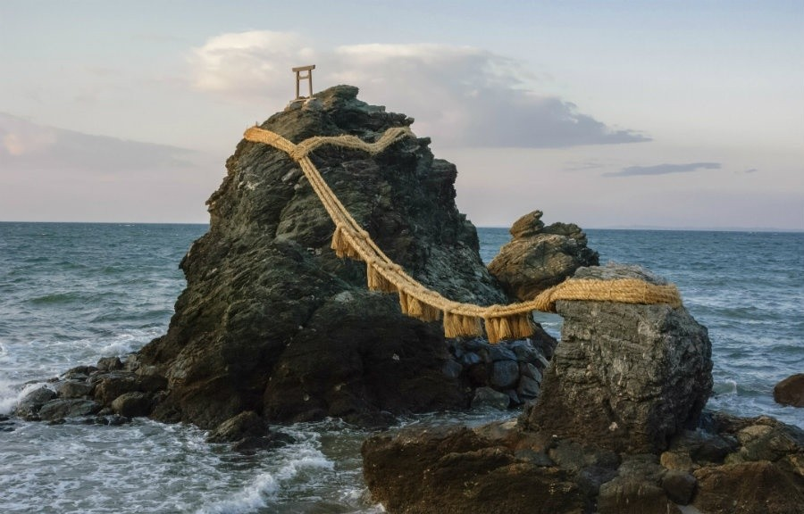

Shared history
De Landa elaborates on the notion of calcification as a crucial step in the history of the animal kingdom: minerals became the condition to free us from physical constraints, enabling new forms of movements that were impossible before.
This evidence of vitality is also proned by independent scientist, environmentalist, futurist James E. Lovelock. Lovelock is best known for having elaborated the Gaia hypothesis, which claims that Earth is a self-regulating system1. As such, Lovelock also argues that the air and rocks are “alive”, and that they act, break and repair in the same way as “people redistribute and concentrate oxygen, hydrogen, nitrogen, carbon, sulfur, phosphorus and other elements of Earth’s crust into two legged, upright forms taht have an amazing propensity to wander across, dig into, and in countless other ways alter Earth’s surface.”
We are walking, talking minerals2.
The way Lovelock engages with the topic is indeed interesting; it is of utmost importance, given the context we are presentely experiencing, to recognise our mineralisation, our thing-power assemblage identity, but also to recognise the role, the agency and the importance of matter, including, but not limited to, rocks.
The way we perceive ourselves is detrimental to all earthy agents because we cannot see past the dichotomy of alive/inert and me/other whereas the reality is, as we demonstrated during this essay, a complex melange of shared history and shared attributes and multiple selves. This moment of realization needs to happen to avoid worlwide (but also extraterrestrial3) catastrophes.
It proves that empathy towards non-human agents is necessary but also logical from an evolutionary point of view. It is the key to a better living to understand where we come from and the ties that bind us to other critters. Evolution is not a linear happenstance but a common, ongoing process that links us all way further than our differencies set us apart.
All things are alive, all things are beings.
